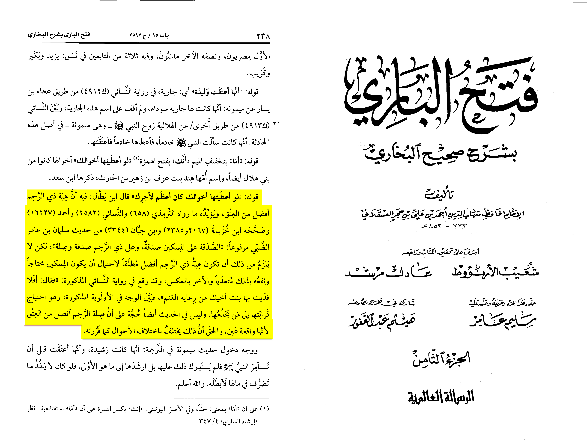

Translation: “ibn batah used this as an argument as giving a slave is better than manumating him, it isn’t
necessary that freeing a slave is worse than manumating him, it is only because of the possibility that (the relative)
is old or miskin.”
-Source: Fathul Bari (8/238)

People can say “but still doesn’t free him” you have a servant would you rather free him or give him to someone who
needs if the servant isn’t fully deservant ? Also that is only the case if you no longer have needs in him but
if he deserves it he must be freed